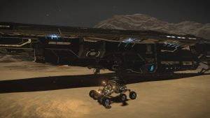

Engalo just touched down inside a small crater and makes he’s way down to the Vehicle hangar to prepare the SRV for an excursion. Aloud clank sounds as the vehicle bay doors open and the SRV is lowered down, A soft cloud of dust whirls up as the SRV hits the powdery ground.
Just as Engalo is about to hit the throttle, an incoming message alert lights up the HUD: “Commander, we are proud to inform you that your brand new Anaconda are now ready for delivery at Jameson Memorial, docking bay 03”
Engalo – “Oh goodie oh goodie oh goodie”
The SRV jumps forward as Engalo pushes the throttle and makes a big sliding turn back towards the ship and back in under the cargo bay door. Just as the SRV are back inside and the cargo doors closes Engalo jumps out, sprints up to the cockpit and begins the startup sequence. Everything shakes as the Deptford Prize rizes from the ground, all available power to the thrusters.
Five jumps in record time and the Deptford Prize lands on Jameson Memorial. The many and monotone corridors at Jameson Memorial is long and boring as on every Orbis station but this time they seemed to strech on forever. This is Engalo’s first brand new ship and it’s taken several years and a lot of hard work to afford here. A delegation from Faulcon DeLacy meets Engalo on the platform inside docking bay 03 and a couple of technicians is ready to go over every system with Engalo.
After hours of system specs and going over alle the switches and buttons it’s finaly time for a shakedown cruise. The two Technicians, Brad Cullen and Erik Devin from Faulcon DeLacy both points at the commanders chair. Erik – “It’s time for a shakedown… Don’t you think Commander?” Engalo takes place in the commanders chair, Brad and Erik sits down in the chairs on each side. A soft humming sound fills the Bridge of the Anaconda. “She’s ALIVE!” – Engalo says with a big grin on he’s face.
Brad smiles – “Did you ever expect anything else? It’s not an Adder we have created for you here.”
Erik – “Hey! I had an Adder for 5 years. Best damn ship I have ever had… Until I got a ship from Faulcon of coarse” Erik laughs.
Brad – “Allright commander all system green were ready for takeoff at your command.”
Engalo ask for Launch clearance. “Cleared for launch” sounds over the comms as the docking bay platform slides forward and the roof up to the docking bay opens. “Ship released” and Engalo has full control over he’s first brand new ship, a big beast of a ship and its immediately clear to Engalo that this is no Asp Explorer. There is a deep rumbling sound as the Anaconda lifts from the docking bay platform. Again a big grin fills Engalos face, carefully pushing the throttle forward.
Closing inn on the airlock the proximity alert kicks inn and red lights flashes everywhere. “I belive you should go up a bit” – Brad says turning towards Engalo. A sharp squeaking sound pierces trough the bridge as the Anaconda scrapes against the bottom of the “mailslot”. Erik laughing – “So… you have never flown anything this big then? I guess you need a new paint job when we get back”
Well clear of the station Engalo wipes some sweat from he’s forehead – “Wow, that was really embarrassing” Brad and Erik both burst out in laughter. Brad – “If you only knew how many times this exact same thing has happened you wouldnt feel so bad about it.”
“Both of you shut up, the commander is always right”- Engalo says while laughing. “Setting course for Shinrarta Dezhra A 1, activating FSD” 3 – 2 – 1 Engage. All three gets pressed back in their seats when the Anaconda enters supercruise. Shinrarta Dezhra A 1 soon fills the whole view. “Remember commander, this ship is a little heavyer than your old Asp!” -Erik says.
“Yes yes, I dont want more scratches now. If I should meet Dr Arcannon with a brand new scratched up ship he will denie me biscuits for all eternity!” – Engalo grins. “Brad, lower landing gear. Erik, look for a good landing spot”
Erik – “Down inside that valley there commander. Looks perfect.”

“My flying haven’t been that professional so far, so you should maybe hold on, just in case!” – Engalo grins.
The Anaconda tilts over as it banks in to the valley. The thrusters roaring while Engalo stears it trough to the landing spot. The dust soars around the Anaconda as it touches down. Brad and Erik both claps theyr hands “Exelent landing commander. Good thing you managed that without crashing at least.” – Brad smiles mockingly. – “There is a dissalignment in the navigation computer tho, Erik could you go down to engineering and take a look at the galaxy database?”
“Sure thing boss.” – Erik jumps up and walks towards the door.
“I guess this could take some time, so I’ll have a drive in the SRV while you guys work” – Engalo says while standing up. – “No joy riding without me now”
Brad grins – “I always wanted a Conda myself. Have a nice drive Commander.”
Engalo enters the vehicle hangar, jumps in the new SRV and gets lowered out. The crane let’s the SRV go pretty far from the ground so Engalo gets a tingeling feeling in he’s stomach as the crane let’s go of the SRV. After driving around the ship a tought hit’s Engalo: – “What in the galaxy am I supposed to call here? She realy needs a name. Obelix maybe?” Over the internal comms the voice of Brad sounds: – “Commander, there is a problem in the navigation computer, looks like one of the circuit boards have been damaged when it got installed. We can’t fly with it and we can’t temporarily rig something either, we need a new one before we could continue. I’ve sent a message to Faulcon and a new part is on it’s way.”
Engalo laughs – “How embarrassing for you guys. I’ll check out a target on my wave scanner then.”
“Yes… I told Erik to damage it actually, so we could make you feel better about banging up your new ship even before we left space dock.” – Brad laughs heartily – “I’ll let you know when they are incoming so you could pick up the container for us when they get here”
To be continued…